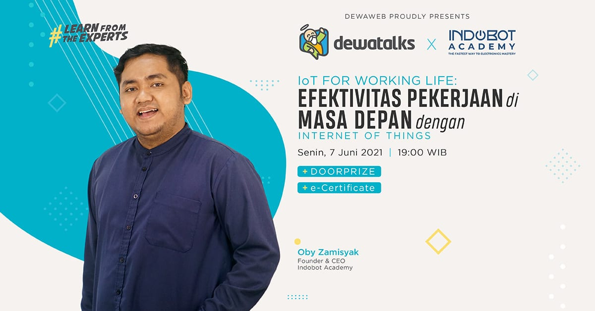

Deskripsi Event:

· Hari/Tanggal Webinar: Senin, 7 Juni 2021
· Waktu: 19:00 WIB
· Via: Zoom Webinar
Dapatkan Free e-sertifikat dan hadiah voucer gopay/ovo untuk 5 peserta beruntung.
Efektivitas pekerjaan di masa depan
Di webinar kali ini, kamu akan mempelajari topik yang unik, yaitu IoT. Internet of Things (IoT) adalah konsep atau program yang memungkinkan sebuah objek memiliki kemampuan mentransmisikan data melalui jaringan tanpa bantuan komputer atau manusia. Kira-kira, apa fungsi dari IoT di dunia kerja dan kenapa IoT itu penting?
Webinar kali ini akan membahas tentang “IoT for Working Life: Efektivitas Pekerjaan di Masa Depan dengan Internet of Things” yang akan dibawakan oleh Oby Zamisyak, Founder & CEO dari Indobot Academy. Menarik ‘kan?
Webinar ini telah dilaksanakan pada:
Hari/tgl: Senin, 7 Juni 2021
Waktu: 19.00 WIB
Via: Zoom Webinar
22 November 2021
90 Peserta
32 November 2021
Online